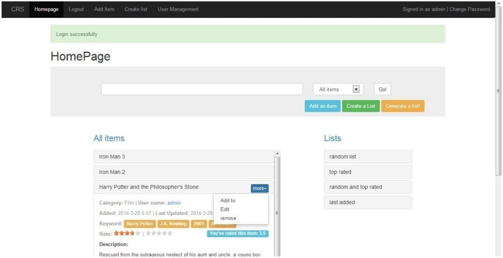
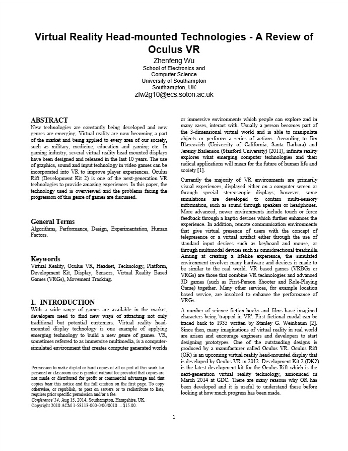
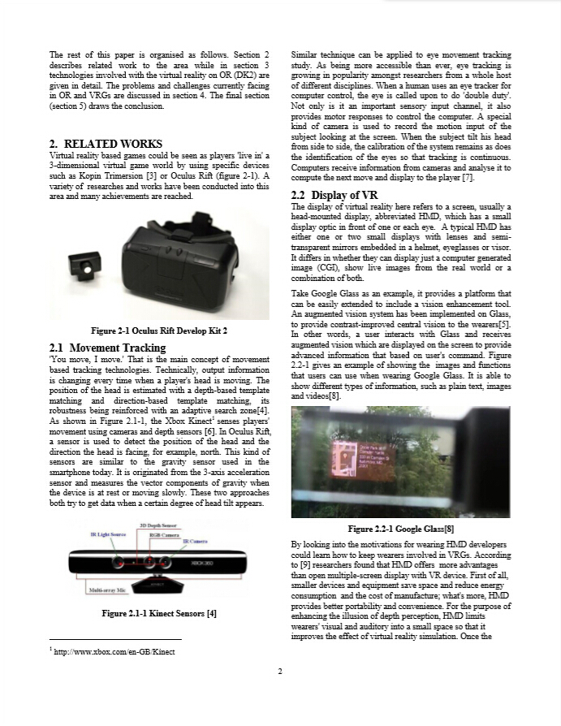

Connection Characteriser App (网络连接分析手机应用)
GDP 小组设计项目
使用工具：Objective C，UML，Xcode，PhotoShop，FastSocket，iOS。
当你的电子设备(手机或者平板电脑)连接到一个无线网络的时候，你也许会想要检测当前网络的状态是否稳定，能否满足自己的需求。这个项目所开发的软件列举了现今较普遍的网络服务并允许用户识别当前网络下这些网络的使用状态。不仅如此，这款应用同时也提供了网络诊断给想要检测其他网络特征的功能，但是这项功能要求用户对网络拥有较深层次的知识。
这份项目设立之初是JANET为了探索一种能够摆脱后端服务器依赖的网络检测技术。我们小组有幸与JANET合作，并得到了JANET许多技术上的支持，最终成功完成开发。
这份项目设立之初是JANET为了探索一种能够摆脱后端服务器依赖的网络检测技术。我们小组有幸与JANET合作，并得到了JANET许多技术上的支持，最终成功完成开发。
项目与报告可提供
Community Recommender System（推荐系统）

Third Year Individual Project（毕业设计）
使用工具: HTML, JavaScript, CSS, Node.js, MongoDB, AJAX, JQuery, UML, EJS, Express, Bootstrap
一个基于简单算法的开放式推荐系统，用户可以根据自己的爱好个性化系统的推荐方式，得到不同的推荐物品或信息。这个系统由三种不同类型的用户组成：普通用户，高级用户以及系统管理员。系统管理员拥有最高权限，能够管辖所有的普通用户和高级用户以及存储在系统的数据。系统只有一位系统管理员，并且不能更改密码，也不会被删除。高级用户能够管理所有的数据信息，类似于管理员，但是不具备管理用户的权限，能够增加，修改或删除系统数据。普通用户能够给予物品评分，并个性化推荐方式让系统提供合理满意的推荐信息。
代码可提供
Cloud Gaming(云游戏)
Interactive Multi-media System Research
关键词: 云计算, 游戏
这是一篇主题为云游戏的学术调查报告。当今时代，云技术已经成为普通生活的重要的一部分，用户能够利用云技术去储存数据以及进行云计算，去满足生活或工作各方面的需要。游戏作为一项最基本的娱乐活动，其产业在最近几十年发展十分迅速。许多传统大公司需要寻找一种战略去吸引更多的人群，增加市场份额。云游戏可能是其达成战略目标的关键。这份报告探索了游戏产业最近在云游戏技术上的成就以及应用云游戏所带来的潜在影响。
报告可提供


简易聊天室

分散式功能与服务
工具使用：Java, Eclipse, Java RMI, GUI
一个基于Java RMI服务的聊天室应用，用户能够选择某个房间(服务器)来加入聊天，或者选择推出聊天室从而不再收到任何来自那个房间的信息。只有同一个房间(服务器)内的用户能够接收到彼此的信息，房间外的用户无法查看聊天室内的内容。
代码以及报告可以提供。
3D虚拟头盔－Oculus VR的研究报告
Interactive Multi-media System Research
关键词：虚拟实现，Oculus VR，头盔，3D技术，显示技术，感应器，虚拟游戏，动态跟踪技术
这是一篇主题为头戴式虚拟现实技术的研究报告，以Oculus VR公司为研究对象。增强现实技术正在全球范围内迅速发展，以谷歌眼镜为例，越来越多的企业与公司参与到这项技术的研究开发中。Oculus VR是一间具有研发世界顶级头盔式增强技术应用以提供一流用户体验的科技型企业。这种增强技术型头盔能够在人们生活中的方方面面大放异彩，比如军事模拟训练与教育应用。这份报告着重分析了这项产品背后所涉及的技术与挑战，以及与其他相同领域内的不同产品的对比。
报告可提供

